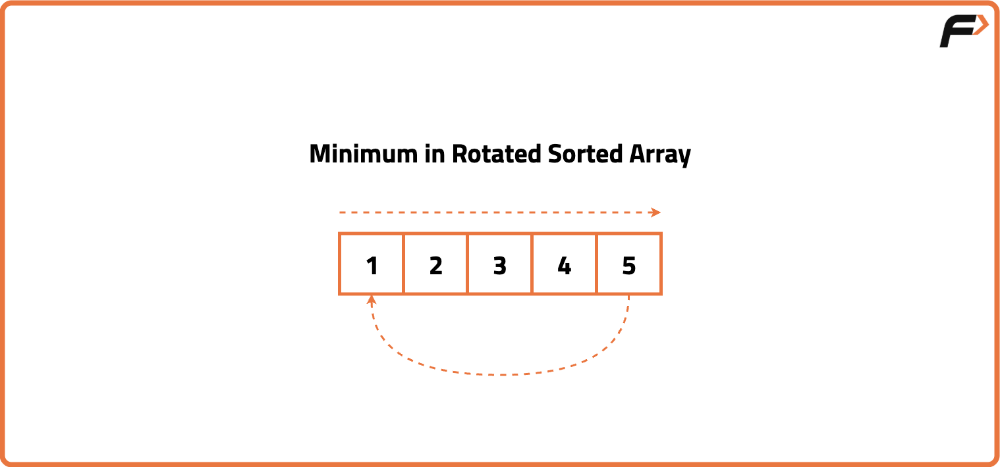
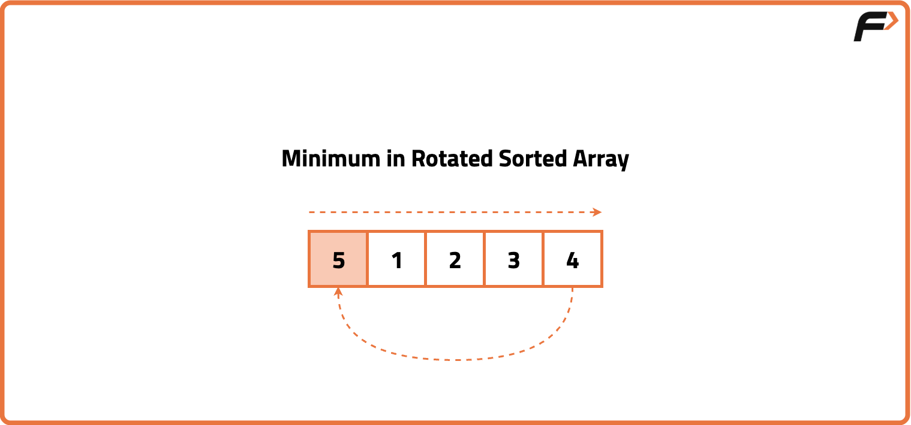
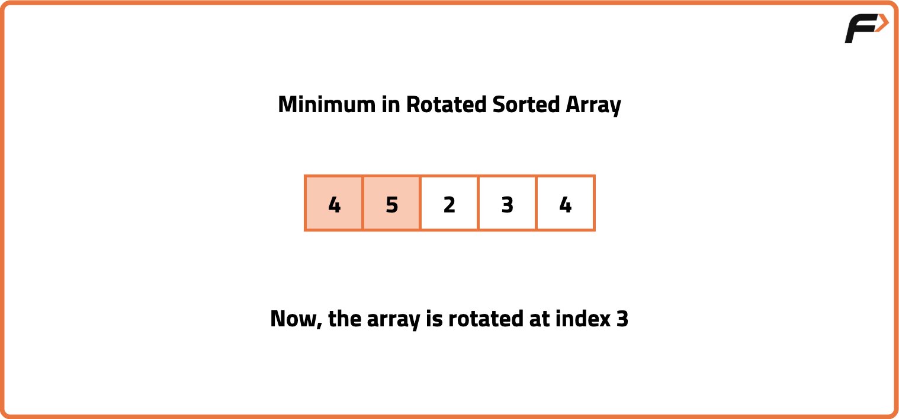
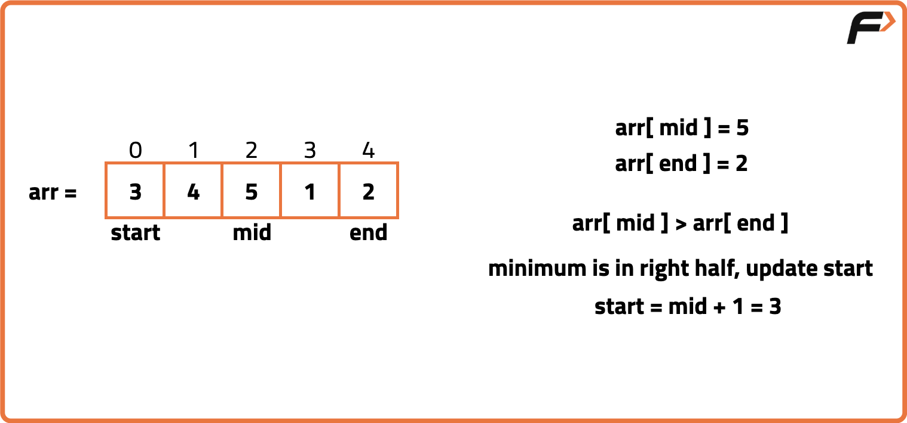
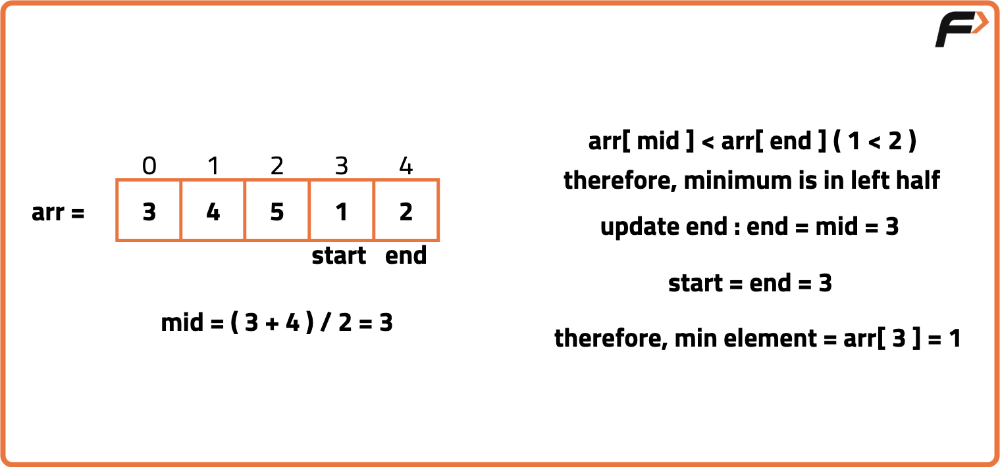

Minimum in Rotated Sorted Array
Problem Statement:
Given an integer array arr of size N, sorted in ascending order (with distinct values), the array is rotated at any index which is unknown. Find the minimum element in the array.
Pre-requisites: Search in Rotated Sorted Array I, Search in Rotated Sorted Array II & Binary Search algorithm
Examples
Input: arr = [4,5,6,7,0,1,2,3] Output: 0 Explanation: The minimum element in the array is 0. Input : arr = [3,4,5,1,2] Output: 1 Explanation : The minimum element in the array is 1.
Disclaimer: It's highly recommend trying to solve it before looking at the solution.
Brute-Force Approach
Algorithm
How does rotation occurs?
Let's consider a sorted array: {1, 2, 3, 4, 5}. If we rotate this array at index 3, it will become: {4, 5, 1, 2, 3}. In essence, we moved the element at the last index to the front, while shifting the remaining elements to the right. We performed this process twice.
One straight forward approach we can use is linear search algorithm. We can simply traverse the entire array and check for the minimum element in the array.
Let's consider a sorted array: {1, 2, 3, 4, 5}. If we rotate this array at index 3, it will become: {4, 5, 1, 2, 3}. In essence, we moved the element at the last index to the front, while shifting the remaining elements to the right. We performed this process twice.



Code
#include <bits/stdc++.h>
using namespace std;
class Solution {
public:
// Function to find the minimum element using linear search
int findMin(vector<int>& nums) {
// Initialize answer with a large number
int minVal = INT_MAX;
// Traverse each element
for (int i = 0; i < nums.size(); i++) {
// Update minimum value
minVal = min(minVal, nums[i]);
}
// Return the result
return minVal;
}
};
int main() {
// Input array
vector<int> nums = {4, 5, 6, 7, 0, 1, 2};
// Create object of Solution
Solution sol;
// Call function and store result
int result = sol.findMin(nums);
// Output the result
cout << "Minimum element is " << result << endl;
return 0;
}
Complexity Analysis
Time Complexity: O(N), we check every element once.Space Complexity: O(1), constant additonal space is used.
Optimal Approach
Algorithm
In a rotated sorted array, the smallest element represents the point of rotation. It is the only element that is smaller than its previous element. Since the array is sorted in two segments, we can use binary search to efficiently find this pivot point. By comparing the middle element with the rightmost element in the current search space, we can determine which half of the array contains the minimum element.
- Initialize pointers to the start and end of the array.
- While start is less than end, calculate the middle index.
- If the middle element is greater than the rightmost element, move the start to mid + 1.
- Else, move the end to mid (because mid can be the minimum).
- When the loop ends, start will point to the minimum element.


Code
#include <bits/stdc++.h>
using namespace std;
class Solution {
public:
// Function to find the minimum element using binary search
int findMin(vector<int>& nums) {
// Initialize low and high pointers
int low = 0, high = nums.size() - 1;
// Binary search loop
while (low < high) {
// Calculate mid index
int mid = low + (high - low) / 2;
// Check which half to discard
if (nums[mid] > nums[high]) {
// Minimum lies in right half
low = mid + 1;
} else {
// Minimum lies in left half (including mid)
high = mid;
}
}
// Return the minimum element
return nums[low];
}
};
int main() {
// Input array
vector<int> nums = {4, 5, 6, 7, 0, 1, 2};
// Create object of Solution
Solution sol;
// Call function and store result
int result = sol.findMin(nums);
// Output the result
cout << "Minimum element is " << result << endl;
return 0;
}
Complexity Analysis
Time Complexity: O(logN), at every step the search space is reduced to half using binary search.Space Complexity: O(1), constant additonal space is used.